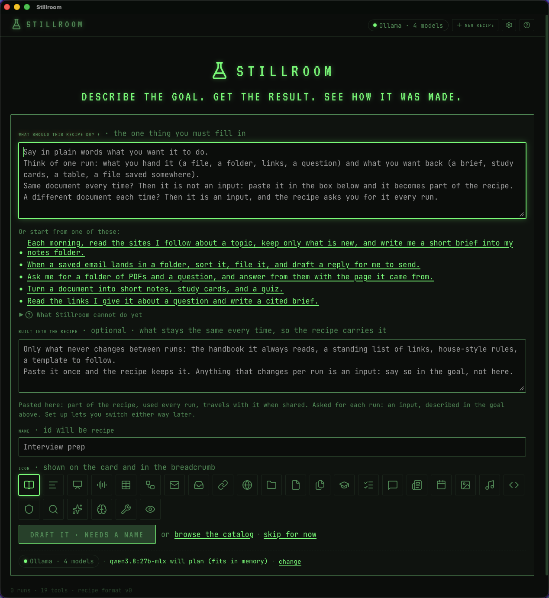
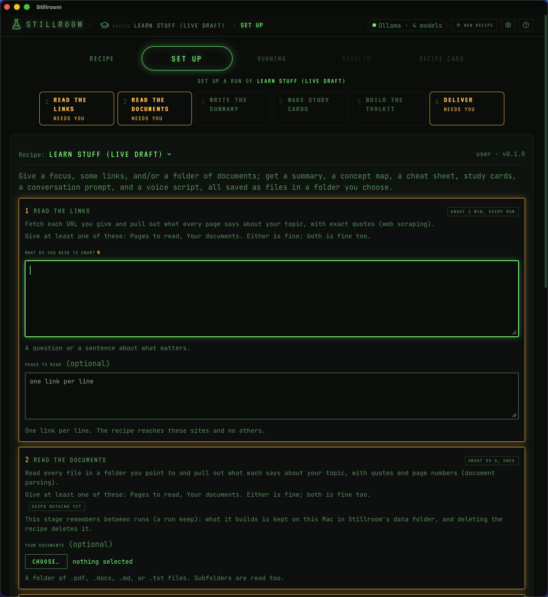
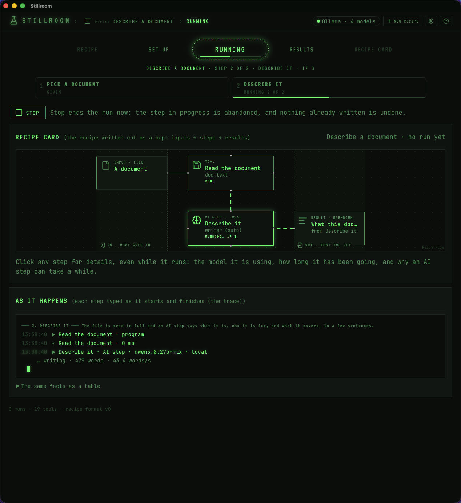
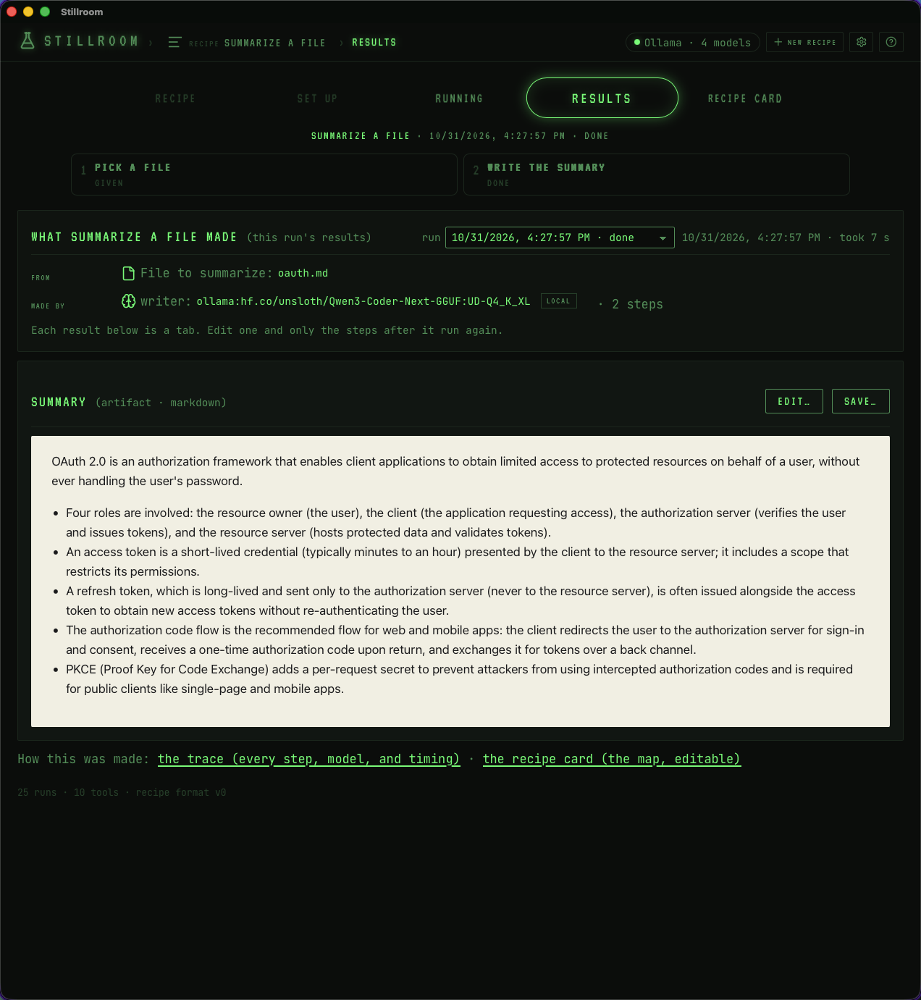
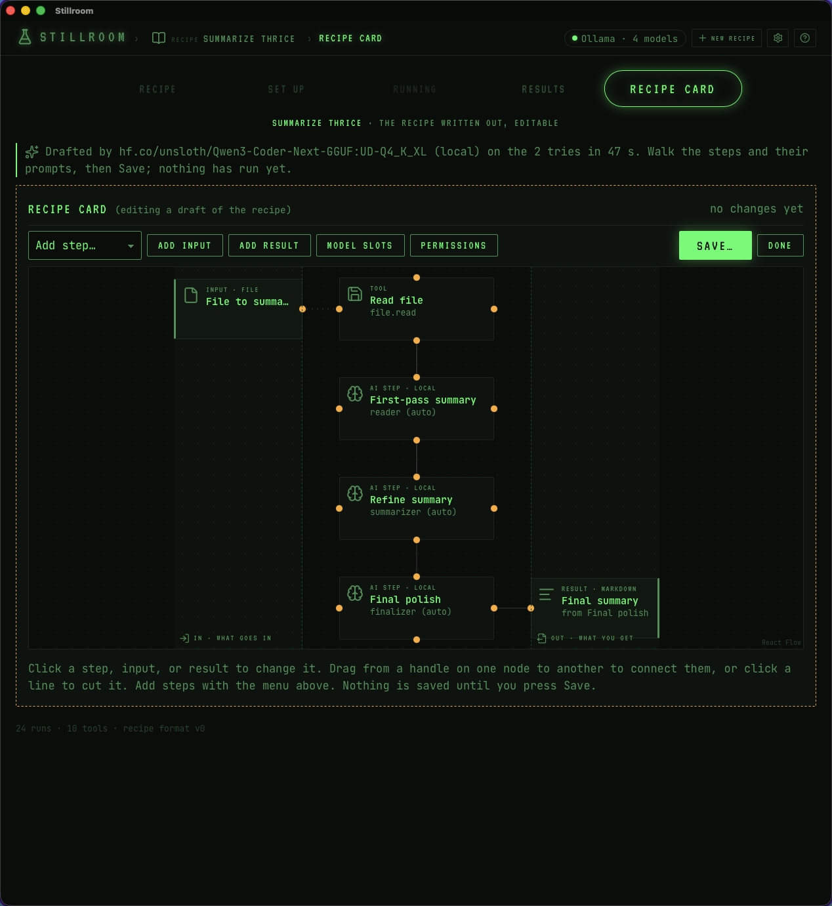
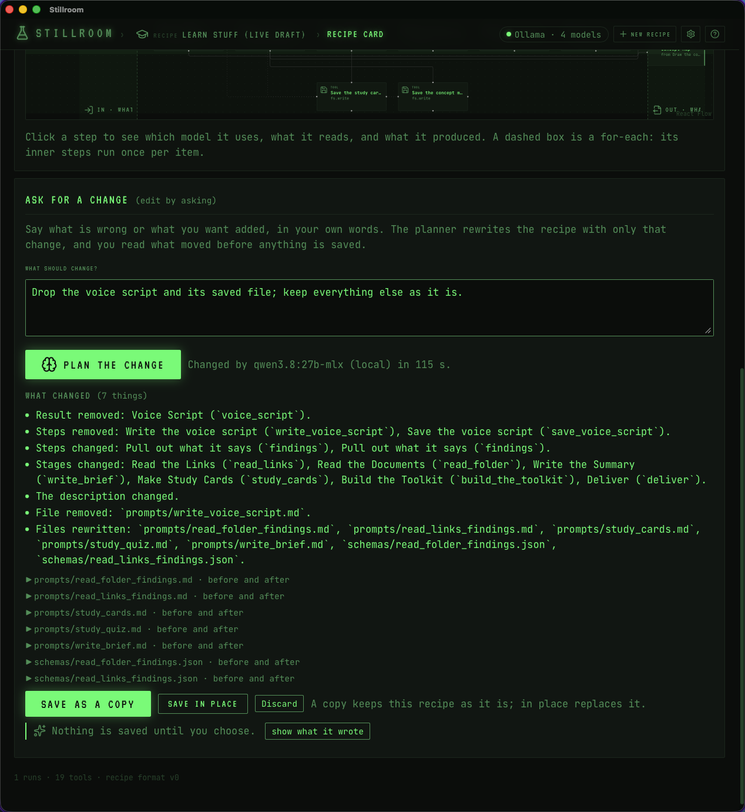
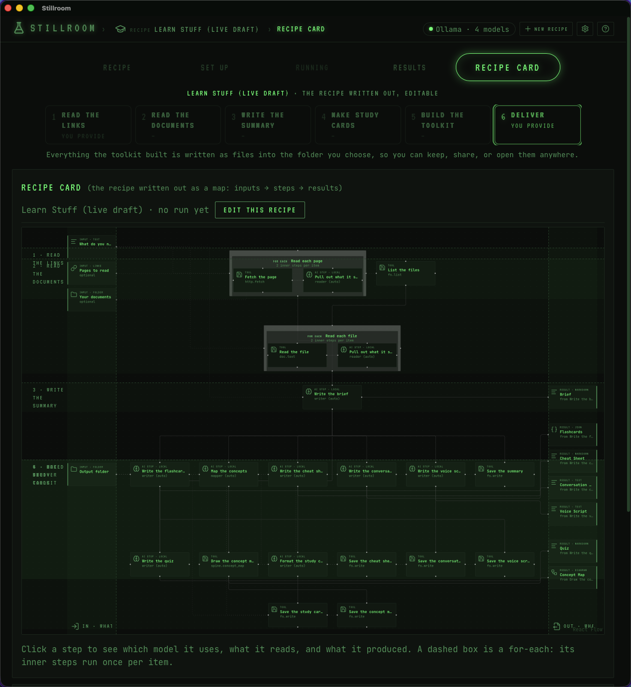
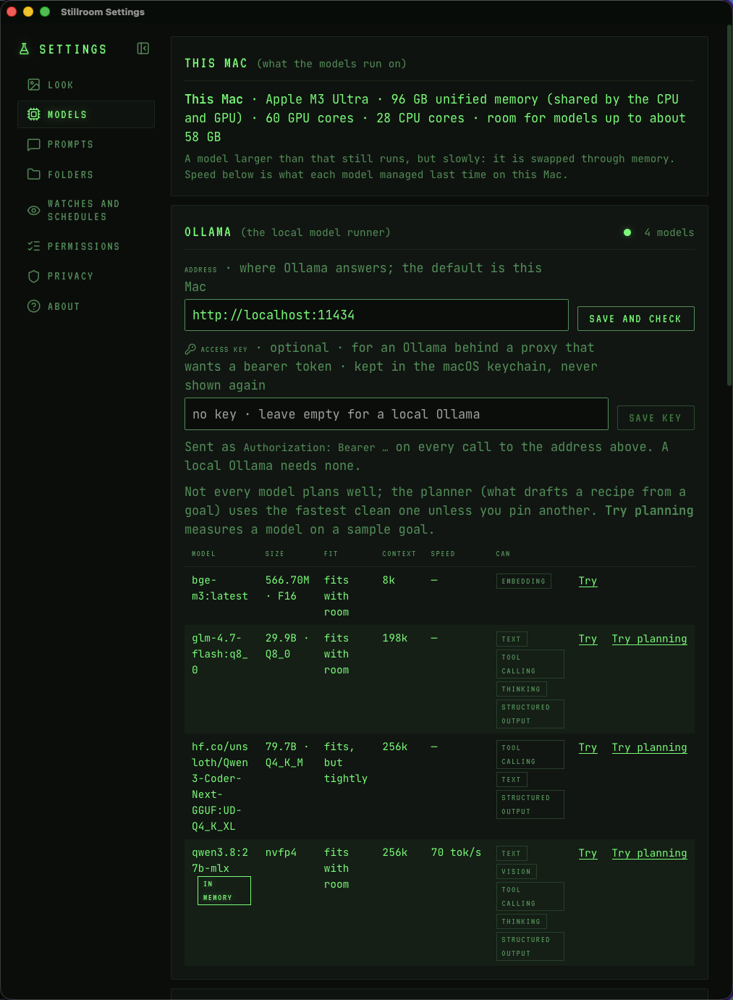
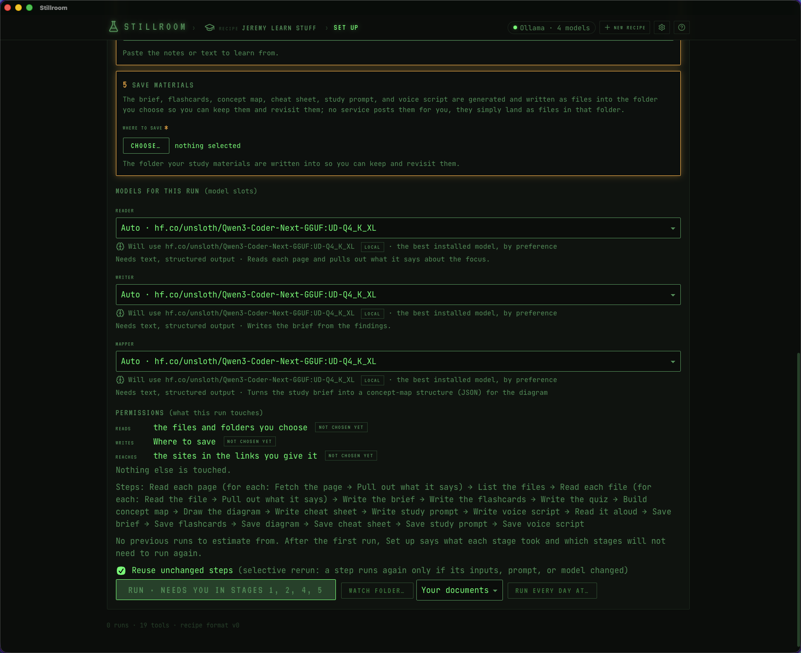

Describe the goal.
Get the result.
See how it was made.
Say what you want in a sentence. Stillroom drafts a recipe, a reusable set of steps with its prompts, runs it on models that live on your Mac, and hands you real things: a brief, flashcards, a diagram, a deck, a filed inbox. Then, only if you want, open the recipe card and see every step, prompt, and model that made them.
Apple silicon · macOS 13 or newer · Ollama with one chat model · no account, no cloud unless you turn one on · MIT

A run (set up, running, results)
Every recipe is a strip of a few stages you can read in order: what you give, what is read, what is made, where it goes. Set up asks for each stage's inputs in its own numbered box, tries every folder before Run, and says how long to expect. Running shows each step as it happens, down to whether the model is still loading or already writing. Results are the things made, each one a tab you can read, edit, or save.



Recipes that ship with it (the catalog)
A recipe is a folder: recipe.yaml, its prompts, its schemas. These come with the app. Add one to your shelf, run it, copy it, change it. Share one as a zip; a recipe someone gives you is checked and asks before it touches anything beyond your own inputs.
- Describe a documentSay what a file is and what is in it, in a few sentences. The example recipe.
- Summarize a fileOne sentence about what it is, then the main points in the file's own order.
- Learning kitNotes, flashcards, a concept map, a process diagram, slides, and narrated audio from one document. The knowledge spine is kept between runs.
- Research briefFetch the pages you give, pull out quoted findings, write a cited brief. Remembers what it read.
- Daily news logWatch the sites you follow and log only what is new. Run it every morning on a schedule.
- Ask your documentsIndex a folder once, then ask it anything and get the passages it came from.
- Batch briefingA folder of files plus links into one brief, with a section for what is missing.
- Inbox triageEmails saved to a folder: sorted, filed by an agent, replies drafted, and you approve before anything is written. Nothing is ever sent.
Make your own (the planner, and asking for a change)
Type a goal. The planner picks from a library of ready-made stages and composes new ones only where nothing fits, then a checker reads the draft and sends problems back to the model until it is clean. You watch it write. Every prompt the planner uses is in Settings, editable, versioned, and resettable.
Don't like something? Tell it. "The quiz should come from the brief, not from pasted notes. Drop the voice script." The planner rewrites the recipe with only that change, you read what moved, and nothing is saved until you choose: a copy, or in place.



What a recipe can do
Read text, Markdown, PDF, and Word files. Fetch the pages you name and no others. Loop over a folder or a list of links. Ask a model for an answer in a fixed shape. Let an agent choose which files to look at, with a budget. Pause for your approval. Remember what it built between runs (an index, parsed pages, a log) and skip itself until its sources change. Draw a concept map, render a diagram, build a deck, read a script aloud in the Mac's own voice. Write files into a folder you chose.
Local first (what leaves your Mac: nothing, unless you say so)


Install (Homebrew, or the zip)
An Apple silicon Mac on macOS 13 or newer, and Ollama with at least one chat model (ollama pull qwen3 is a fine start).
brew install --cask jeremym/tap/stillroom
open -a StillroomOr download Stillroom-X.Y.Z.zip from Releases, unzip, move it to Applications, and right-click → Open the first time.
Verify a download
shasum -a 256 Stillroom-X.Y.Z.zip # matches the release .sha256
codesign -d -r- /Applications/Stillroom.app # a genuine build prints the leaf below
certificate leaf = H"32ace20bdc543323908a451fea68106e9225a6b9"Where things live
Your recipes, runs, and remembered answers stay in your Library folder, in one SQLite file and one folder of recipes. Delete them and the app forgets everything. The source, the recipe format, the stage library, and the plan are on GitHub; community recipes arrive by pull request.